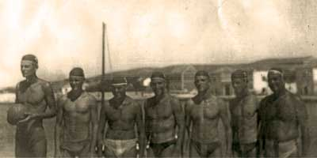

About club
 Water polo club Croatia Turanj was founded in the year 1949. and nowdays it counts about 30 members. Teams from our club are continually competing in regional leagues for younger categories, and depending on circumstances club teams participate in senior competitions, too. In 2004. season it is expected that Croatia Turanj will compete in categories of junior and senior (third Croatian league). Because there is no closed swimming pool nearby team trainings and competitions take place only in Summer (as all Croatian regional leagues do).
Water polo club Croatia Turanj was founded in the year 1949. and nowdays it counts about 30 members. Teams from our club are continually competing in regional leagues for younger categories, and depending on circumstances club teams participate in senior competitions, too. In 2004. season it is expected that Croatia Turanj will compete in categories of junior and senior (third Croatian league). Because there is no closed swimming pool nearby team trainings and competitions take place only in Summer (as all Croatian regional leagues do).
At the moment club management is consisted of president Đoni Rota, vice-president Nikola Deković, board members: Ivan Deković, Ive Rota, Josip Santini, Krunoslav Santini and Nado Santini, and supervising board: Boško Santini, Damir Santini and Ivan Santini.
History of the club
Soon after WWII young boys from Turanj had to leave their homes and went to school, mostly to Zadar. In Zadar they have seen the game of water polo for the first time, and when they were coming home for holidays they used to play water polo in local port. In the year 1949 they organized and played for the first time, and that was the beginning of water polo in Turanj. First genuine water polo ball was brought to Turanj by Damir Čorić, and first goal was brought and bought from Zadar for 100 000 dinars.

The oldest team photography of Croatia from year 1958
At the beginning very few really knew how to play, so the winners would usually be the team that had stronger players and better swimmers. At that time they were competing nearby teams from St. Filip and Jakov, Biograd, Zadar, Betina, Iž and Preko. First generation of players was made up of: Anđelko and Milorad Bolić, Ive Deković (Muto), Sveto Jačan, Davor Mandić, Ivo Mišulić, Emil and Ante Pedisić, Fedor and Zvone Pirović, Kažimir Rota, and of Božidar (Perin), Božidar (Božin), Davor, Drago and Pave Santini. Ive Matulj and priest Frane Mandić were on the team lead. First competing phase lasted up to 1965, when competitions faded, but interest for water polo in Turanj was never lost.

Team photo from 1974
70-es: The new beginning
Competitions were again continued at the late 70's. New management (mostly consisted of old club members), reassembled the team that competed with Bjelovar, Osijek, Borovo, Hvar, Šipan, Rogoznica and Mornar and Veteran (both teams from Split) within Republic league. With time, water polo became so popular in Turanj that diverse tournaments for cadet, junior and senior teams were organized (few of them even on republic level). Among people that contributed club with their knowledge most prominent was Zlatko Šimenc, very well known water polo professional (today professor on Zagreb university). That team existed till mid 80's, when financial troubles appeared and competing was stopped again.
90-es: Reawakening
On year 1994 water polo club Croatia was revitalized, with great help from prof. Zoran Vrkić. He raised extremely talented generation born between 1980 and 1982, which dominated in cadet and junior competitions among Biograd, Betina and Zadar. In 1997 season Croatia successfully participated in the third, and seasons 1998 and 1999 in the second state league.
On 50th anniversary of water polo being played in Turanj, Croatian national team leaded with Neven Kovačević, joined the jubilee game and played together with local players.